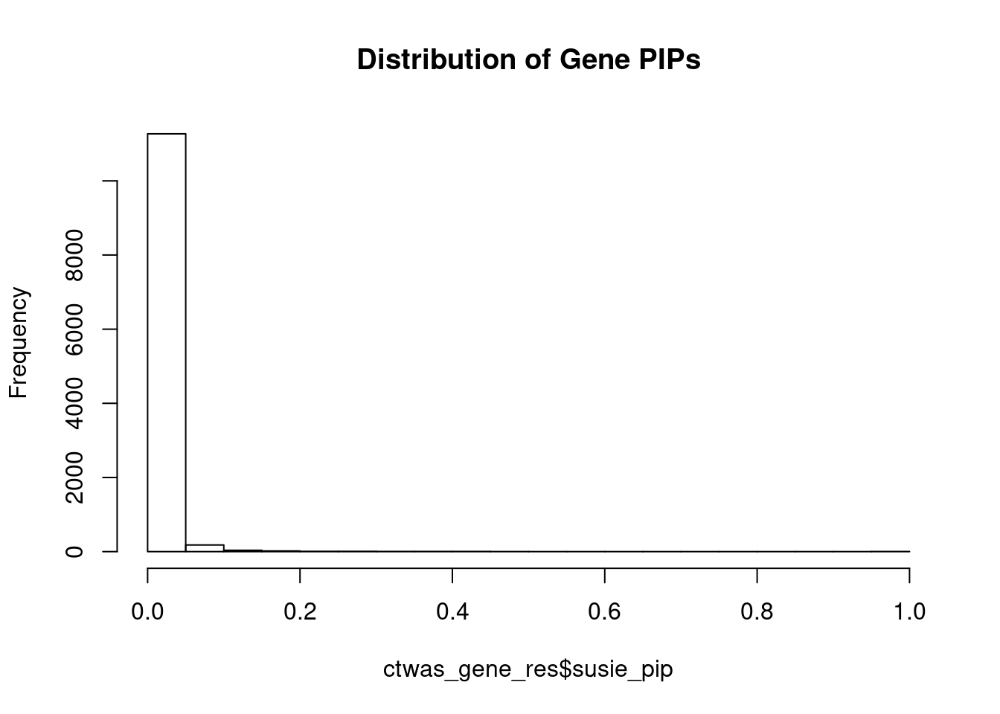
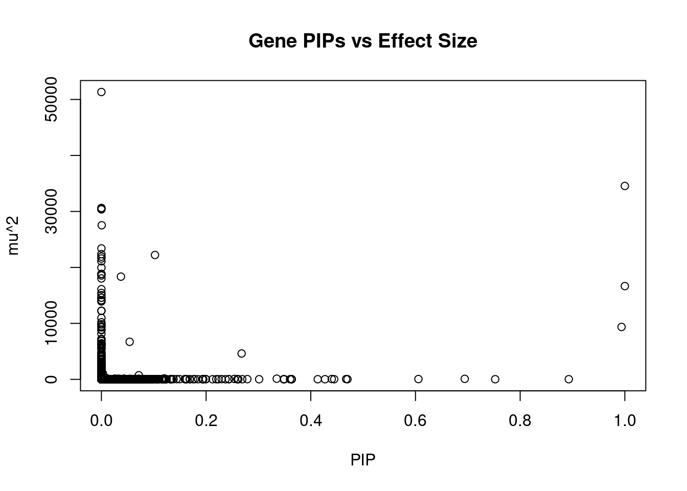
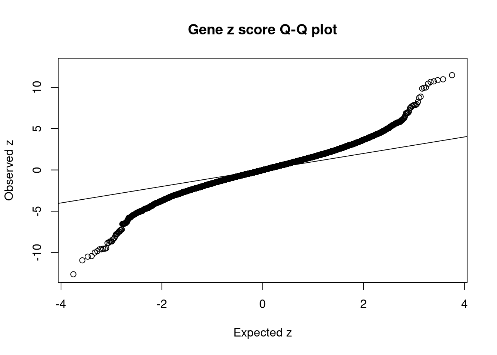
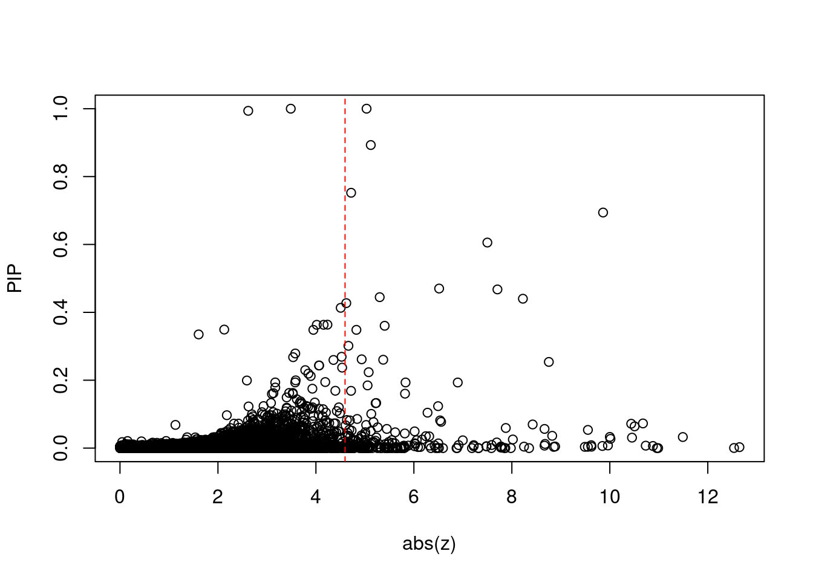
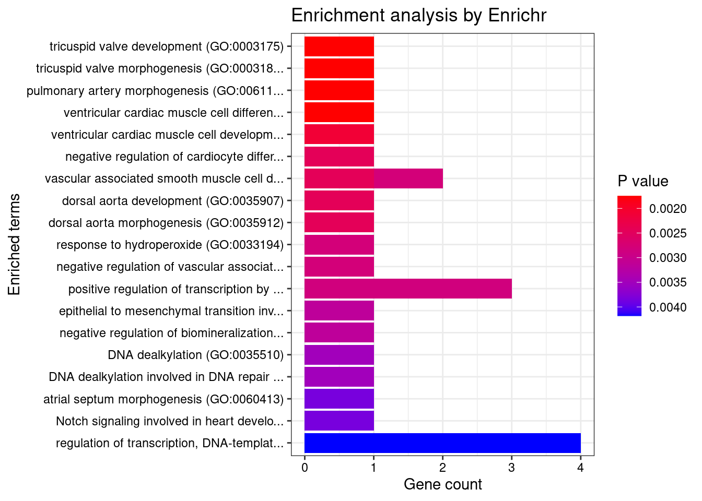
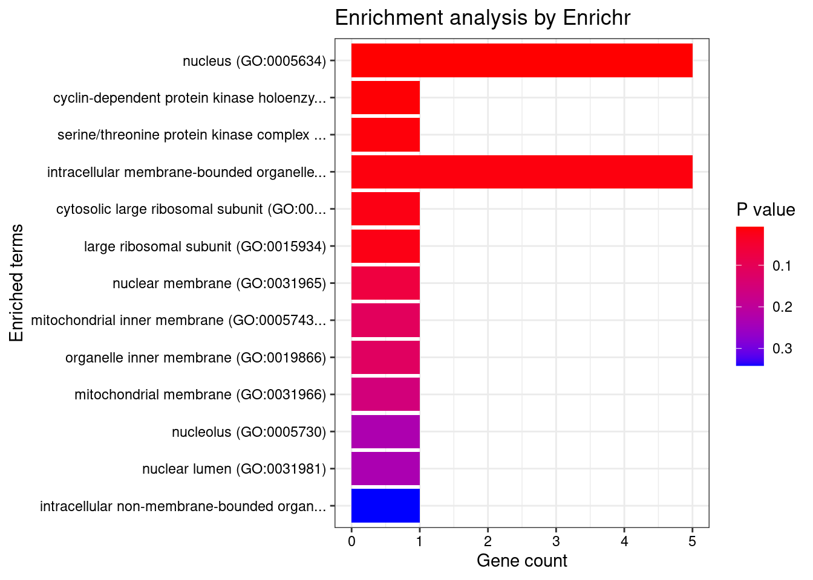
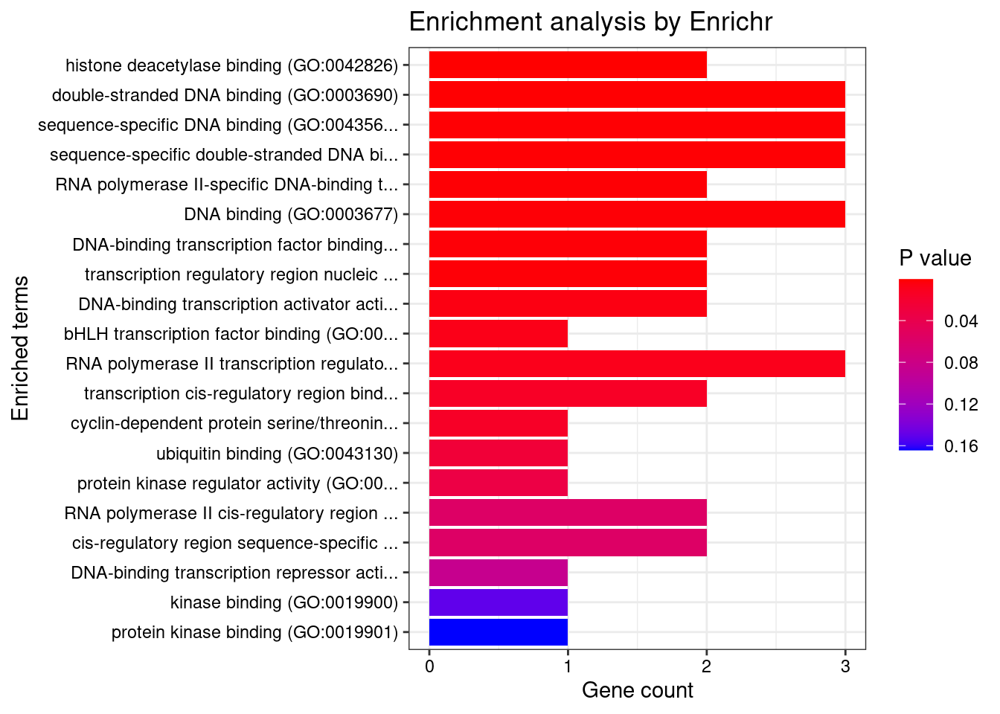
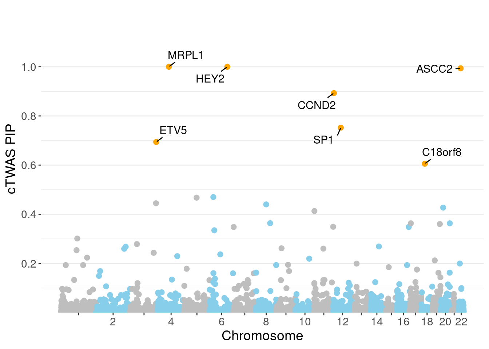
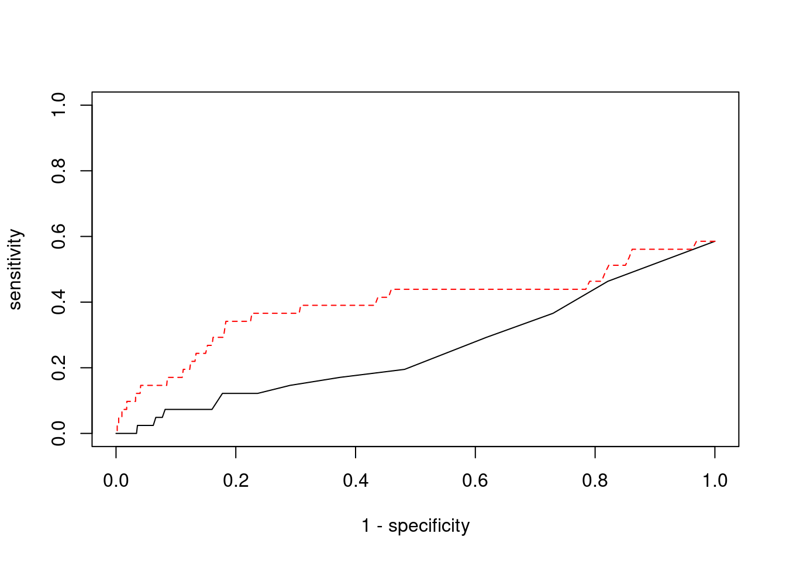

BMI - Brain Caudate basal ganglia
sheng Qian
2021-2-6
Last updated: 2022-02-21
Checks: 6 1
Knit directory: cTWAS_analysis/
This reproducible R Markdown analysis was created with workflowr (version 1.6.2). The Checks tab describes the reproducibility checks that were applied when the results were created. The Past versions tab lists the development history.
Great! Since the R Markdown file has been committed to the Git repository, you know the exact version of the code that produced these results.
Great job! The global environment was empty. Objects defined in the global environment can affect the analysis in your R Markdown file in unknown ways. For reproduciblity it’s best to always run the code in an empty environment.
The command set.seed(20211220) was run prior to running the code in the R Markdown file. Setting a seed ensures that any results that rely on randomness, e.g. subsampling or permutations, are reproducible.
Great job! Recording the operating system, R version, and package versions is critical for reproducibility.
Nice! There were no cached chunks for this analysis, so you can be confident that you successfully produced the results during this run.
Using absolute paths to the files within your workflowr project makes it difficult for you and others to run your code on a different machine. Change the absolute path(s) below to the suggested relative path(s) to make your code more reproducible.
| absolute | relative |
|---|---|
| /project2/xinhe/shengqian/cTWAS/cTWAS_analysis/data/ | data |
| /project2/xinhe/shengqian/cTWAS/cTWAS_analysis/code/ctwas_config.R | code/ctwas_config.R |
Great! You are using Git for version control. Tracking code development and connecting the code version to the results is critical for reproducibility.
The results in this page were generated with repository version bbf6737. See the Past versions tab to see a history of the changes made to the R Markdown and HTML files.
Note that you need to be careful to ensure that all relevant files for the analysis have been committed to Git prior to generating the results (you can use wflow_publish or wflow_git_commit). workflowr only checks the R Markdown file, but you know if there are other scripts or data files that it depends on. Below is the status of the Git repository when the results were generated:
Ignored files:
Ignored: .ipynb_checkpoints/
Untracked files:
Untracked: Rplot.png
Untracked: analysis/Glucose_Adipose_Subcutaneous.Rmd
Untracked: analysis/Glucose_Adipose_Visceral_Omentum.Rmd
Untracked: analysis/Splicing_Test.Rmd
Untracked: code/.ipynb_checkpoints/
Untracked: code/AF_out/
Untracked: code/BMI_S_out/
Untracked: code/BMI_out/
Untracked: code/Glucose_out/
Untracked: code/LDL_S_out/
Untracked: code/T2D_out/
Untracked: code/ctwas_config.R
Untracked: code/mapping.R
Untracked: code/out/
Untracked: code/run_AF_analysis.sbatch
Untracked: code/run_AF_analysis.sh
Untracked: code/run_AF_ctwas_rss_LDR.R
Untracked: code/run_BMI_analysis.sbatch
Untracked: code/run_BMI_analysis.sh
Untracked: code/run_BMI_analysis_S.sbatch
Untracked: code/run_BMI_analysis_S.sh
Untracked: code/run_BMI_ctwas_rss_LDR.R
Untracked: code/run_BMI_ctwas_rss_LDR_S.R
Untracked: code/run_Glucose_analysis.sbatch
Untracked: code/run_Glucose_analysis.sh
Untracked: code/run_Glucose_ctwas_rss_LDR.R
Untracked: code/run_LDL_analysis_S.sbatch
Untracked: code/run_LDL_analysis_S.sh
Untracked: code/run_LDL_ctwas_rss_LDR_S.R
Untracked: code/run_T2D_analysis.sbatch
Untracked: code/run_T2D_analysis.sh
Untracked: code/run_T2D_ctwas_rss_LDR.R
Untracked: data/.ipynb_checkpoints/
Untracked: data/AF/
Untracked: data/BMI/
Untracked: data/BMI_S/
Untracked: data/Glucose/
Untracked: data/LDL_S/
Untracked: data/T2D/
Untracked: data/TEST/
Untracked: data/UKBB/
Untracked: data/UKBB_SNPs_Info.text
Untracked: data/gene_OMIM.txt
Untracked: data/gene_pip_0.8.txt
Untracked: data/mashr_Heart_Atrial_Appendage.db
Untracked: data/mashr_sqtl/
Untracked: data/summary_known_genes_annotations.xlsx
Untracked: data/untitled.txt
Note that any generated files, e.g. HTML, png, CSS, etc., are not included in this status report because it is ok for generated content to have uncommitted changes.
These are the previous versions of the repository in which changes were made to the R Markdown (analysis/BMI_Brain_Caudate_basal_ganglia.Rmd) and HTML (docs/BMI_Brain_Caudate_basal_ganglia.html) files. If you’ve configured a remote Git repository (see ?wflow_git_remote), click on the hyperlinks in the table below to view the files as they were in that past version.
| File | Version | Author | Date | Message |
|---|---|---|---|---|
| Rmd | bbf6737 | sq-96 | 2022-02-21 | update |
| html | 91f38fa | sq-96 | 2022-02-13 | Build site. |
| Rmd | eb13ecf | sq-96 | 2022-02-13 | update |
| html | e6bc169 | sq-96 | 2022-02-13 | Build site. |
| Rmd | 87fee8b | sq-96 | 2022-02-13 | update |
Weight QC
#number of imputed weights
nrow(qclist_all)[1] 11538#number of imputed weights by chromosome
table(qclist_all$chr)
1 2 3 4 5 6 7 8 9 10 11 12 13 14 15 16
1112 837 689 449 566 643 536 429 430 443 690 629 239 387 388 525
17 18 19 20 21 22
715 186 889 345 129 282 #number of imputed weights without missing variants
sum(qclist_all$nmiss==0)[1] 8973#proportion of imputed weights without missing variants
mean(qclist_all$nmiss==0)[1] 0.7777Check convergence of parameters

| Version | Author | Date |
|---|---|---|
| e6bc169 | sq-96 | 2022-02-13 |
#estimated group prior
estimated_group_prior <- group_prior_rec[,ncol(group_prior_rec)]
names(estimated_group_prior) <- c("gene", "snp")
estimated_group_prior["snp"] <- estimated_group_prior["snp"]*thin #adjust parameter to account for thin argument
print(estimated_group_prior) gene snp
0.0025716 0.0002996 #estimated group prior variance
estimated_group_prior_var <- group_prior_var_rec[,ncol(group_prior_var_rec)]
names(estimated_group_prior_var) <- c("gene", "snp")
print(estimated_group_prior_var) gene snp
18.14 17.47 #report sample size
print(sample_size)[1] 336107#report group size
group_size <- c(nrow(ctwas_gene_res), n_snps)
print(group_size)[1] 11538 7535010#estimated group PVE
estimated_group_pve <- estimated_group_prior_var*estimated_group_prior*group_size/sample_size #check PVE calculation
names(estimated_group_pve) <- c("gene", "snp")
print(estimated_group_pve) gene snp
0.001601 0.117318 #compare sum(PIP*mu2/sample_size) with above PVE calculation
c(sum(ctwas_gene_res$PVE),sum(ctwas_snp_res$PVE))[1] 0.2005 15.2164Genes with highest PIPs

genename region_tag susie_pip mu2 PVE z num_eqtl
4862 HEY2 6_84 1.0000 34549.60 1.028e-01 5.034 1
8605 MRPL1 4_52 1.0000 16661.36 4.957e-02 3.486 1
1577 ASCC2 22_10 0.9937 9364.23 2.769e-02 -2.618 1
3408 CCND2 12_4 0.8929 28.66 7.615e-05 -5.120 1
10379 SP1 12_33 0.7523 25.56 5.721e-05 -4.719 1
12572 ETV5 3_114 0.6941 94.99 1.962e-04 9.862 1
5598 C18orf8 18_12 0.6056 55.44 9.990e-05 7.500 2
13830 HIST1H2BE 6_20 0.4701 30.75 4.300e-05 -6.515 1
13559 CTC-498M16.4 5_52 0.4675 53.75 7.476e-05 7.706 1
6002 ECE2 3_113 0.4447 29.33 3.881e-05 -5.302 1
10039 KCNB2 8_53 0.4401 64.90 8.499e-05 -8.226 1
1258 KIF16B 20_12 0.4271 24.80 3.152e-05 -4.620 1
12886 AP006621.5 11_1 0.4133 25.01 3.075e-05 -4.506 1
7888 YWHAZ 8_69 0.3637 24.52 2.653e-05 4.235 1
8734 ELP5 17_6 0.3633 34.12 3.688e-05 4.157 2
1722 DNAJC5 20_38 0.3632 23.95 2.588e-05 -4.018 1
5697 IGLON5 19_35 0.3604 31.09 3.334e-05 -5.403 1
1031 IGSF9B 11_83 0.3492 29.78 3.094e-05 2.128 1
5546 CDH13 16_46 0.3484 24.86 2.577e-05 -4.826 1
11928 HRAT92 7_1 0.3484 31.53 3.268e-05 -3.948 3Genes with largest effect sizes

genename region_tag susie_pip mu2 PVE z num_eqtl
7909 CCDC171 9_13 0.0000000 51333 0.000e+00 7.979 1
4862 HEY2 6_84 1.0000000 34550 1.028e-01 5.034 1
9691 STX19 3_59 0.0000000 30626 0.000e+00 -5.060 1
10446 GSAP 7_49 0.0000000 30471 0.000e+00 5.260 1
13068 RP11-490G2.2 1_60 0.0000000 30364 0.000e+00 5.044 1
8151 LEO1 15_21 0.0005517 27533 4.519e-05 4.603 1
5468 MFAP1 15_16 0.0000000 23396 0.000e+00 4.303 1
4567 IGHMBP2 11_38 0.0000000 22373 0.000e+00 -4.328 2
13777 LINC02019 3_35 0.1023540 22219 6.766e-03 -4.490 1
5290 TMOD3 15_21 0.0000000 21923 0.000e+00 -5.412 1
11916 CKMT1A 15_16 0.0000000 21583 0.000e+00 -4.115 1
1364 WDR76 15_16 0.0000000 21090 0.000e+00 4.775 2
2991 CISH 3_35 0.0000000 19958 0.000e+00 -3.799 1
1222 C3orf18 3_35 0.0000000 18831 0.000e+00 4.682 1
2990 HEMK1 3_35 0.0000000 18831 0.000e+00 -4.682 1
3137 PLCL1 2_117 0.0000000 18556 0.000e+00 5.642 1
1064 CCNT2 2_80 0.0372469 18352 2.034e-03 3.686 1
2179 PDE4C 19_14 0.0000000 18026 0.000e+00 6.594 1
8605 MRPL1 4_52 0.9999963 16661 4.957e-02 3.486 1
5185 TUBGCP4 15_16 0.0000000 16113 0.000e+00 3.550 2Genes with highest PVE
genename region_tag susie_pip mu2 PVE z num_eqtl
4862 HEY2 6_84 1.0000000 34549.60 1.028e-01 5.034 1
8605 MRPL1 4_52 0.9999963 16661.36 4.957e-02 3.486 1
1577 ASCC2 22_10 0.9936907 9364.23 2.769e-02 -2.618 1
13777 LINC02019 3_35 0.1023540 22218.87 6.766e-03 -4.490 1
3071 LANCL1 2_124 0.2678433 4621.81 3.683e-03 -3.535 1
1064 CCNT2 2_80 0.0372469 18352.47 2.034e-03 3.686 1
7733 MFSD8 4_84 0.0539407 6711.44 1.077e-03 2.512 1
12572 ETV5 3_114 0.6940969 94.99 1.962e-04 9.862 1
10923 TTC30B 2_107 0.0714653 738.10 1.569e-04 -3.137 1
11912 VPS52 6_28 0.3349314 122.68 1.223e-04 1.606 1
5598 C18orf8 18_12 0.6056280 55.44 9.990e-05 7.500 2
10039 KCNB2 8_53 0.4401104 64.90 8.499e-05 -8.226 1
3408 CCND2 12_4 0.8929292 28.66 7.615e-05 -5.120 1
13559 CTC-498M16.4 5_52 0.4675212 53.75 7.476e-05 7.706 1
179 NISCH 3_36 0.1199919 169.37 6.047e-05 4.468 2
6862 GPR61 1_67 0.2539107 78.14 5.903e-05 8.755 1
10379 SP1 12_33 0.7523004 25.56 5.721e-05 -4.719 1
8151 LEO1 15_21 0.0005517 27533.18 4.519e-05 4.603 1
13830 HIST1H2BE 6_20 0.4700979 30.75 4.300e-05 -6.515 1
6002 ECE2 3_113 0.4447126 29.33 3.881e-05 -5.302 1Genes with largest z scores
genename region_tag susie_pip mu2 PVE z num_eqtl
7736 MST1R 3_35 2.778e-03 1066.54 8.816e-06 -12.646 3
38 RBM6 3_35 3.659e-04 898.10 9.778e-07 12.536 1
9298 KCTD13 16_24 3.260e-02 111.57 1.082e-05 11.491 1
5215 ADCY3 2_16 5.213e-05 181.06 2.808e-08 10.987 2
7732 RNF123 3_35 4.332e-12 814.77 1.050e-14 -10.959 1
1846 MAPK3 16_24 6.198e-03 99.06 1.827e-06 10.880 1
8639 INO80E 16_24 7.196e-03 95.02 2.034e-06 10.734 1
12763 RP11-1348G14.4 16_23 7.270e-02 92.18 1.994e-05 10.676 1
11175 NPIPB6 16_23 6.407e-02 94.15 1.795e-05 -10.506 1
10711 CLN3 16_23 3.079e-02 89.34 8.184e-06 10.453 1
9418 NUPR1 16_23 7.178e-02 98.60 2.106e-05 -10.437 2
9502 NFATC2IP 16_23 2.729e-02 87.47 7.102e-06 -10.013 1
8296 ZNF668 16_24 3.291e-02 78.13 7.649e-06 10.000 1
8995 C1QTNF4 11_29 7.823e-03 95.03 2.212e-06 9.961 2
12572 ETV5 3_114 6.941e-01 94.99 1.962e-04 9.862 1
1938 KAT8 16_24 6.258e-03 74.20 1.381e-06 -9.848 1
11718 NDUFS3 11_29 4.101e-03 85.99 1.049e-06 -9.624 1
11003 SULT1A2 16_23 8.563e-03 77.50 1.975e-06 -9.621 2
11724 LAT 16_23 5.360e-02 86.34 1.377e-05 -9.553 1
2577 MTCH2 11_29 3.824e-03 84.27 9.588e-07 -9.551 1Comparing z scores and PIPs

[1] 0.02089 genename region_tag susie_pip mu2 PVE z num_eqtl
7736 MST1R 3_35 2.778e-03 1066.54 8.816e-06 -12.646 3
38 RBM6 3_35 3.659e-04 898.10 9.778e-07 12.536 1
9298 KCTD13 16_24 3.260e-02 111.57 1.082e-05 11.491 1
5215 ADCY3 2_16 5.213e-05 181.06 2.808e-08 10.987 2
7732 RNF123 3_35 4.332e-12 814.77 1.050e-14 -10.959 1
1846 MAPK3 16_24 6.198e-03 99.06 1.827e-06 10.880 1
8639 INO80E 16_24 7.196e-03 95.02 2.034e-06 10.734 1
12763 RP11-1348G14.4 16_23 7.270e-02 92.18 1.994e-05 10.676 1
11175 NPIPB6 16_23 6.407e-02 94.15 1.795e-05 -10.506 1
10711 CLN3 16_23 3.079e-02 89.34 8.184e-06 10.453 1
9418 NUPR1 16_23 7.178e-02 98.60 2.106e-05 -10.437 2
9502 NFATC2IP 16_23 2.729e-02 87.47 7.102e-06 -10.013 1
8296 ZNF668 16_24 3.291e-02 78.13 7.649e-06 10.000 1
8995 C1QTNF4 11_29 7.823e-03 95.03 2.212e-06 9.961 2
12572 ETV5 3_114 6.941e-01 94.99 1.962e-04 9.862 1
1938 KAT8 16_24 6.258e-03 74.20 1.381e-06 -9.848 1
11718 NDUFS3 11_29 4.101e-03 85.99 1.049e-06 -9.624 1
11003 SULT1A2 16_23 8.563e-03 77.50 1.975e-06 -9.621 2
11724 LAT 16_23 5.360e-02 86.34 1.377e-05 -9.553 1
2577 MTCH2 11_29 3.824e-03 84.27 9.588e-07 -9.551 1GO enrichment analysis for genes with PIP>0.5
#number of genes for gene set enrichment
length(genes)[1] 7Uploading data to Enrichr... Done.
Querying GO_Biological_Process_2021... Done.
Querying GO_Cellular_Component_2021... Done.
Querying GO_Molecular_Function_2021... Done.
Parsing results... Done.
[1] "GO_Biological_Process_2021"
Term
1 tricuspid valve development (GO:0003175)
2 tricuspid valve morphogenesis (GO:0003186)
3 pulmonary artery morphogenesis (GO:0061156)
4 ventricular cardiac muscle cell differentiation (GO:0055012)
5 ventricular cardiac muscle cell development (GO:0055015)
6 negative regulation of cardiocyte differentiation (GO:1905208)
7 vascular associated smooth muscle cell development (GO:0097084)
8 dorsal aorta development (GO:0035907)
9 dorsal aorta morphogenesis (GO:0035912)
10 vascular associated smooth muscle cell differentiation (GO:0035886)
11 response to hydroperoxide (GO:0033194)
12 negative regulation of vascular associated smooth muscle cell differentiation (GO:1905064)
13 positive regulation of transcription by RNA polymerase II (GO:0045944)
14 epithelial to mesenchymal transition involved in endocardial cushion formation (GO:0003198)
15 negative regulation of biomineralization (GO:0110150)
16 DNA dealkylation (GO:0035510)
17 DNA dealkylation involved in DNA repair (GO:0006307)
18 atrial septum morphogenesis (GO:0060413)
19 Notch signaling involved in heart development (GO:0061314)
20 regulation of transcription, DNA-templated (GO:0006355)
21 smooth muscle cell differentiation (GO:0051145)
22 positive regulation of vascular endothelial cell proliferation (GO:1905564)
23 cardiac right ventricle morphogenesis (GO:0003215)
24 regulation of gene expression (GO:0010468)
25 cardiac left ventricle morphogenesis (GO:0003214)
26 atrial septum development (GO:0003283)
27 regulation of vasculogenesis (GO:2001212)
28 negative regulation of transcription regulatory region DNA binding (GO:2000678)
29 positive regulation by host of viral transcription (GO:0043923)
30 pulmonary valve morphogenesis (GO:0003184)
31 cell surface receptor signaling pathway involved in heart development (GO:0061311)
32 aorta morphogenesis (GO:0035909)
33 positive regulation of cyclin-dependent protein serine/threonine kinase activity (GO:0045737)
34 muscle tissue morphogenesis (GO:0060415)
35 positive regulation of transcription, DNA-templated (GO:0045893)
36 positive regulation of amyloid-beta formation (GO:1902004)
37 pulmonary valve development (GO:0003177)
38 regulation of vascular endothelial cell proliferation (GO:1905562)
39 cardiac atrium morphogenesis (GO:0003209)
40 atrioventricular valve morphogenesis (GO:0003181)
41 mesenchymal cell development (GO:0014031)
42 cardiac epithelial to mesenchymal transition (GO:0060317)
43 cardiac ventricle development (GO:0003231)
44 positive regulation of cyclin-dependent protein kinase activity (GO:1904031)
45 positive regulation of macromolecule metabolic process (GO:0010604)
46 positive regulation of amyloid precursor protein catabolic process (GO:1902993)
47 negative regulation of biomineral tissue development (GO:0070168)
48 cardiac muscle cell development (GO:0055013)
49 cardiac conduction system development (GO:0003161)
50 regulation of nucleic acid-templated transcription (GO:1903506)
51 positive regulation of G1/S transition of mitotic cell cycle (GO:1900087)
52 maturation of LSU-rRNA (GO:0000470)
53 regulation of biomineral tissue development (GO:0070167)
54 regulation of transcription regulatory region DNA binding (GO:2000677)
55 ventricular septum morphogenesis (GO:0060412)
56 artery morphogenesis (GO:0048844)
57 regulation of cellular macromolecule biosynthetic process (GO:2000112)
58 negative regulation of DNA binding (GO:0043392)
59 modulation by host of symbiont process (GO:0051851)
60 aortic valve morphogenesis (GO:0003180)
61 positive regulation of gene expression (GO:0010628)
62 vasculogenesis (GO:0001570)
63 muscle cell development (GO:0055001)
64 regulation of amyloid-beta formation (GO:1902003)
65 positive regulation of cell cycle G1/S phase transition (GO:1902808)
66 muscle cell differentiation (GO:0042692)
67 aortic valve development (GO:0003176)
68 positive regulation of nucleic acid-templated transcription (GO:1903508)
69 ventricular septum development (GO:0003281)
70 regulation of cell development (GO:0060284)
71 regulation of nervous system development (GO:0051960)
72 cardiac ventricle morphogenesis (GO:0003208)
73 epithelial to mesenchymal transition (GO:0001837)
74 positive regulation of blood vessel endothelial cell migration (GO:0043536)
75 mesenchymal cell differentiation (GO:0048762)
76 heart morphogenesis (GO:0003007)
77 cardiac muscle tissue development (GO:0048738)
78 regulation of cyclin-dependent protein kinase activity (GO:1904029)
79 regulation of blood vessel endothelial cell migration (GO:0043535)
80 blood vessel morphogenesis (GO:0048514)
81 ribosomal large subunit biogenesis (GO:0042273)
82 positive regulation of mitotic cell cycle phase transition (GO:1901992)
83 Notch signaling pathway (GO:0007219)
84 regulation of neurogenesis (GO:0050767)
85 anterior/posterior pattern specification (GO:0009952)
86 negative regulation of transcription by RNA polymerase II (GO:0000122)
87 regulation of transcription initiation from RNA polymerase II promoter (GO:0060260)
88 positive regulation of cell cycle (GO:0045787)
89 embryonic organ development (GO:0048568)
90 snRNA transcription by RNA polymerase II (GO:0042795)
91 regulation of G1/S transition of mitotic cell cycle (GO:2000045)
92 snRNA transcription (GO:0009301)
93 negative regulation of developmental process (GO:0051093)
94 positive regulation of endothelial cell proliferation (GO:0001938)
95 positive regulation of cellular amide metabolic process (GO:0034250)
96 regulation of cyclin-dependent protein serine/threonine kinase activity (GO:0000079)
97 positive regulation of endothelial cell migration (GO:0010595)
98 mitochondrial translational elongation (GO:0070125)
99 mitochondrial translational termination (GO:0070126)
100 regulation of lipid metabolic process (GO:0019216)
101 translational termination (GO:0006415)
102 regulation of transcription by RNA polymerase II (GO:0006357)
103 cellular response to chemical stress (GO:0062197)
104 positive regulation of vasculature development (GO:1904018)
105 translational elongation (GO:0006414)
106 mitochondrial translation (GO:0032543)
107 positive regulation of protein serine/threonine kinase activity (GO:0071902)
108 regulation of protein serine/threonine kinase activity (GO:0071900)
Overlap Adjusted.P.value Genes
1 1/5 0.02173 HEY2
2 1/5 0.02173 HEY2
3 1/5 0.02173 HEY2
4 1/5 0.02173 HEY2
5 1/6 0.02173 HEY2
6 1/7 0.02173 HEY2
7 1/7 0.02173 HEY2
8 1/7 0.02173 HEY2
9 1/7 0.02173 HEY2
10 1/8 0.02173 HEY2
11 1/8 0.02173 SP1
12 1/8 0.02173 HEY2
13 3/908 0.02173 SP1;HEY2;ETV5
14 1/9 0.02173 HEY2
15 1/9 0.02173 HEY2
16 1/10 0.02173 ASCC2
17 1/10 0.02173 ASCC2
18 1/11 0.02173 HEY2
19 1/11 0.02173 HEY2
20 4/2244 0.02173 SP1;HEY2;ASCC2;ETV5
21 1/12 0.02173 HEY2
22 1/13 0.02173 SP1
23 1/13 0.02173 HEY2
24 3/1079 0.02173 SP1;HEY2;ASCC2
25 1/14 0.02173 HEY2
26 1/14 0.02173 HEY2
27 1/14 0.02173 HEY2
28 1/16 0.02173 HEY2
29 1/16 0.02173 SP1
30 1/17 0.02173 HEY2
31 1/17 0.02173 HEY2
32 1/17 0.02173 HEY2
33 1/17 0.02173 CCND2
34 1/17 0.02173 HEY2
35 3/1183 0.02173 SP1;HEY2;ETV5
36 1/18 0.02173 SP1
37 1/18 0.02173 HEY2
38 1/18 0.02173 SP1
39 1/19 0.02173 HEY2
40 1/19 0.02173 HEY2
41 1/19 0.02173 HEY2
42 1/20 0.02173 HEY2
43 1/20 0.02173 HEY2
44 1/20 0.02173 CCND2
45 2/384 0.02205 SP1;HEY2
46 1/22 0.02237 SP1
47 1/22 0.02237 HEY2
48 1/24 0.02343 HEY2
49 1/25 0.02343 HEY2
50 2/430 0.02343 SP1;ASCC2
51 1/26 0.02343 CCND2
52 1/26 0.02343 MRPL1
53 1/26 0.02343 HEY2
54 1/27 0.02388 HEY2
55 1/28 0.02431 HEY2
56 1/30 0.02500 HEY2
57 2/468 0.02500 SP1;ASCC2
58 1/31 0.02500 HEY2
59 1/32 0.02500 SP1
60 1/32 0.02500 HEY2
61 2/482 0.02500 SP1;HEY2
62 1/33 0.02500 HEY2
63 1/33 0.02500 HEY2
64 1/34 0.02530 SP1
65 1/35 0.02530 CCND2
66 1/35 0.02530 HEY2
67 1/36 0.02531 HEY2
68 2/511 0.02531 SP1;HEY2
69 1/38 0.02626 HEY2
70 1/41 0.02792 HEY2
71 1/42 0.02819 HEY2
72 1/44 0.02911 HEY2
73 1/47 0.03066 HEY2
74 1/48 0.03088 SP1
75 1/51 0.03236 HEY2
76 1/53 0.03275 HEY2
77 1/53 0.03275 HEY2
78 1/54 0.03293 CCND2
79 1/55 0.03311 SP1
80 1/56 0.03329 HEY2
81 1/57 0.03346 MRPL1
82 1/58 0.03363 CCND2
83 1/60 0.03436 HEY2
84 1/62 0.03485 HEY2
85 1/63 0.03485 HEY2
86 2/684 0.03485 HEY2;ETV5
87 1/64 0.03494 HEY2
88 1/66 0.03521 CCND2
89 1/66 0.03521 HEY2
90 1/70 0.03662 SP1
91 1/71 0.03662 CCND2
92 1/71 0.03662 SP1
93 1/77 0.03883 HEY2
94 1/77 0.03883 SP1
95 1/81 0.04040 SP1
96 1/82 0.04046 CCND2
97 1/86 0.04197 SP1
98 1/89 0.04254 MRPL1
99 1/89 0.04254 MRPL1
100 1/92 0.04352 SP1
101 1/96 0.04477 MRPL1
102 3/2206 0.04477 SP1;HEY2;ETV5
103 1/101 0.04632 ETV5
104 1/102 0.04632 SP1
105 1/104 0.04676 MRPL1
106 1/105 0.04676 MRPL1
107 1/106 0.04676 CCND2
108 1/111 0.04848 CCND2
[1] "GO_Cellular_Component_2021"
Term Overlap
1 nucleus (GO:0005634) 5/4484
2 cyclin-dependent protein kinase holoenzyme complex (GO:0000307) 1/30
3 serine/threonine protein kinase complex (GO:1902554) 1/37
4 intracellular membrane-bounded organelle (GO:0043231) 5/5192
5 cytosolic large ribosomal subunit (GO:0022625) 1/55
6 large ribosomal subunit (GO:0015934) 1/59
Adjusted.P.value Genes
1 0.04435 CCND2;SP1;HEY2;ASCC2;ETV5
2 0.04435 CCND2
3 0.04435 CCND2
4 0.04435 CCND2;SP1;HEY2;ASCC2;ETV5
5 0.04435 MRPL1
6 0.04435 MRPL1
[1] "GO_Molecular_Function_2021"
Term
1 histone deacetylase binding (GO:0042826)
2 double-stranded DNA binding (GO:0003690)
3 sequence-specific DNA binding (GO:0043565)
4 sequence-specific double-stranded DNA binding (GO:1990837)
5 RNA polymerase II-specific DNA-binding transcription factor binding (GO:0061629)
6 DNA binding (GO:0003677)
7 DNA-binding transcription factor binding (GO:0140297)
8 transcription regulatory region nucleic acid binding (GO:0001067)
9 DNA-binding transcription activator activity, RNA polymerase II-specific (GO:0001228)
10 bHLH transcription factor binding (GO:0043425)
11 RNA polymerase II transcription regulatory region sequence-specific DNA binding (GO:0000977)
12 transcription cis-regulatory region binding (GO:0000976)
13 cyclin-dependent protein serine/threonine kinase regulator activity (GO:0016538)
14 ubiquitin binding (GO:0043130)
15 protein kinase regulator activity (GO:0019887)
Overlap Adjusted.P.value Genes
1 2/93 0.006236 SP1;HEY2
2 3/651 0.006236 SP1;HEY2;ETV5
3 3/707 0.006236 SP1;HEY2;ETV5
4 3/712 0.006236 SP1;HEY2;ETV5
5 2/190 0.006236 SP1;HEY2
6 3/811 0.006236 SP1;HEY2;ETV5
7 2/208 0.006236 SP1;HEY2
8 2/212 0.006236 SP1;ETV5
9 2/333 0.013425 SP1;ETV5
10 1/22 0.016887 SP1
11 3/1359 0.017807 SP1;HEY2;ETV5
12 2/549 0.025894 SP1;ETV5
13 1/44 0.025894 CCND2
14 1/74 0.040257 ASCC2
15 1/98 0.049580 CCND2DisGeNET enrichment analysis for genes with PIP>0.5
Description FDR
11 Communicating Hydrocephalus 0.01406
31 POLYDACTYLY, POSTAXIAL 0.01406
35 Hydrocephalus Ex-Vacuo 0.01406
46 Post-Traumatic Hydrocephalus 0.01406
48 Obstructive Hydrocephalus 0.01406
60 Cerebral ventriculomegaly 0.01406
63 Brugada ECG Pattern 0.01406
64 Perisylvian syndrome 0.01406
66 Megalanecephaly Polymicrogyria-Polydactyly Hydrocephalus Syndrome 0.01406
67 POSTAXIAL POLYDACTYLY, TYPE B 0.01406
Ratio BgRatio
11 1/4 7/9703
31 1/4 4/9703
35 1/4 7/9703
46 1/4 7/9703
48 1/4 7/9703
60 1/4 7/9703
63 1/4 4/9703
64 1/4 4/9703
66 1/4 4/9703
67 1/4 3/9703WebGestalt enrichment analysis for genes with PIP>0.5
Loading the functional categories...
Loading the ID list...
Loading the reference list...
Performing the enrichment analysis...
description size overlap FDR database
1 Transcriptional misregulation in cancer 83 3 0.04417 pathway_KEGG
userId
1 SP1;ETV5;CCND2PIP Manhattan Plot

Sensitivity, specificity and precision for silver standard genes
#number of genes in known annotations
print(length(known_annotations))[1] 41#number of genes in known annotations with imputed expression
print(sum(known_annotations %in% ctwas_gene_res$genename))[1] 24#significance threshold for TWAS
print(sig_thresh)[1] 4.595#number of ctwas genes
length(ctwas_genes)[1] 4#number of TWAS genes
length(twas_genes)[1] 241#show novel genes (ctwas genes with not in TWAS genes)
ctwas_gene_res[ctwas_gene_res$genename %in% novel_genes,report_cols] genename region_tag susie_pip mu2 PVE z num_eqtl
8605 MRPL1 4_52 1.0000 16661 0.04957 3.486 1
1577 ASCC2 22_10 0.9937 9364 0.02769 -2.618 1#sensitivity / recall
print(sensitivity) ctwas TWAS
0.00000 0.09756 #specificity
print(specificity) ctwas TWAS
0.9997 0.9794 #precision / PPV
print(precision) ctwas TWAS
0.0000 0.0166 
sessionInfo()R version 3.6.1 (2019-07-05)
Platform: x86_64-pc-linux-gnu (64-bit)
Running under: Scientific Linux 7.4 (Nitrogen)
Matrix products: default
BLAS/LAPACK: /software/openblas-0.2.19-el7-x86_64/lib/libopenblas_haswellp-r0.2.19.so
locale:
[1] LC_CTYPE=en_US.UTF-8 LC_NUMERIC=C
[3] LC_TIME=en_US.UTF-8 LC_COLLATE=en_US.UTF-8
[5] LC_MONETARY=en_US.UTF-8 LC_MESSAGES=en_US.UTF-8
[7] LC_PAPER=en_US.UTF-8 LC_NAME=C
[9] LC_ADDRESS=C LC_TELEPHONE=C
[11] LC_MEASUREMENT=en_US.UTF-8 LC_IDENTIFICATION=C
attached base packages:
[1] stats graphics grDevices utils datasets methods base
other attached packages:
[1] readxl_1.3.1 forcats_0.5.1 stringr_1.4.0 dplyr_1.0.7
[5] purrr_0.3.4 readr_2.1.1 tidyr_1.1.4 tidyverse_1.3.1
[9] tibble_3.1.6 WebGestaltR_0.4.4 disgenet2r_0.99.2 enrichR_3.0
[13] cowplot_1.0.0 ggplot2_3.3.5 workflowr_1.6.2
loaded via a namespace (and not attached):
[1] fs_1.5.2 lubridate_1.8.0 bit64_4.0.5 doParallel_1.0.16
[5] httr_1.4.2 rprojroot_2.0.2 tools_3.6.1 backports_1.4.1
[9] doRNG_1.8.2 utf8_1.2.2 R6_2.5.1 vipor_0.4.5
[13] DBI_1.1.1 colorspace_2.0-2 withr_2.4.3 ggrastr_1.0.1
[17] tidyselect_1.1.1 bit_4.0.4 curl_4.3.2 compiler_3.6.1
[21] git2r_0.26.1 cli_3.1.0 rvest_1.0.2 Cairo_1.5-12.2
[25] xml2_1.3.3 labeling_0.4.2 scales_1.1.1 apcluster_1.4.8
[29] digest_0.6.29 rmarkdown_2.11 svglite_1.2.2 pkgconfig_2.0.3
[33] htmltools_0.5.2 dbplyr_2.1.1 fastmap_1.1.0 highr_0.9
[37] rlang_0.4.12 rstudioapi_0.13 RSQLite_2.2.8 jquerylib_0.1.4
[41] farver_2.1.0 generics_0.1.1 jsonlite_1.7.2 vroom_1.5.7
[45] magrittr_2.0.1 Matrix_1.2-18 ggbeeswarm_0.6.0 Rcpp_1.0.7
[49] munsell_0.5.0 fansi_0.5.0 gdtools_0.1.9 lifecycle_1.0.1
[53] stringi_1.7.6 whisker_0.3-2 yaml_2.2.1 plyr_1.8.6
[57] grid_3.6.1 blob_1.2.2 ggrepel_0.9.1 parallel_3.6.1
[61] promises_1.0.1 crayon_1.4.2 lattice_0.20-38 haven_2.4.3
[65] hms_1.1.1 knitr_1.36 pillar_1.6.4 igraph_1.2.10
[69] rjson_0.2.20 rngtools_1.5.2 reshape2_1.4.4 codetools_0.2-16
[73] reprex_2.0.1 glue_1.5.1 evaluate_0.14 data.table_1.14.2
[77] modelr_0.1.8 vctrs_0.3.8 tzdb_0.2.0 httpuv_1.5.1
[81] foreach_1.5.1 cellranger_1.1.0 gtable_0.3.0 assertthat_0.2.1
[85] cachem_1.0.6 xfun_0.29 broom_0.7.10 later_0.8.0
[89] iterators_1.0.13 beeswarm_0.2.3 memoise_2.0.1 ellipsis_0.3.2